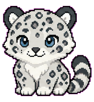

换个角色，就是新的桌面伙伴。
准备一个新朋友
一个宠物就是一个文件夹。文件夹的名字，也是它在宠物菜单里的名字。准备好下面两份文件，就可以开始了。
- 1
画好每一帧
把动作按顺序排成序列图，每帧大小一致，推荐使用透明背景。
- 2
写一份配置
用 config.json 告诉 Wi-Fi 每帧多大、动作在哪一行、播放多快。
- 3
放入并选择
放进自定义宠物目录，重新打开宠物菜单，选择你的角色。
用 AI 制作宠物
还没有序列图？OpenAI 的 hatch-pet skill 可以帮你生成角色、制作九行动画，再检查画面和动作。本页提供完整 skill 下载，以及适合 Wi-Fi 的配置。
imagegen 图像生成的 Codex 环境中使用，还需要 Python、Pillow 和 jq。安装 skill 后，先让 Codex 检查依赖；普通聊天窗口不一定能执行这些步骤。下载 skill，准备一个工作文件夹
下载 ZIP 并解压，把完整的
hatch-pet文件夹放进一个在 Codex 中打开的工作目录。保留里面的脚本和参考文件。请 Codex 安装并检查
在这个工作目录的对话里，复制下面这句话。Codex 会按 skill 的说明确认安装位置和依赖。
安装提示词请将当前工作目录里的 hatch-pet 文件夹安装到我的用户级 Codex skill 目录，保留完整的 SKILL.md、scripts 和 references。请按 SKILL.md 的路径约定确认脚本位置，并检查 imagegen、Python（含 Pillow）和 jq 是否可用。
说说你想要的桌面伙伴
安装后，在新一轮对话中用
$hatch-pet开始。可以附上自己的参考图，描述角色、风格和动作；下面以雪豹为例。雪豹示例 · 按你的想法修改$hatch-pet 帮我制作一只可爱的雪豹桌面宠物，毛茸茸、尾巴蓬松，动作轻松有趣。如有我附上的参考图，请保持角色外观一致。使用透明背景，制作完整的九行动画，单帧 192×208 像素，按 8 列×9 行排列。请检查每帧位置、动作连贯性和未使用格子的透明度，给我看预览，并交付最终的 spritesheet.webp。我会搭配 Wi-Fi 的 config.json 使用。
跟随 Codex 确认角色和动画预览，完成后取用最终的
spritesheet.webp。本页提供的 skill 输出为 1536×1872 像素，无需为 Wi-Fi 重新裁切。带它来到 Wi-Fi 桌面
下载配套
config.json，与最终的spritesheet.webp一起放入当前账号的pets/custom/我的雪豹/。重新打开宠物菜单，选择“我的雪豹”即可。完整账号路径见下一节。我的雪豹文件夹我的雪豹/ ├── spritesheet.webp └── config.json
pet.json是 Codex 的宠物说明文件，不能改名替代 Wi-Fi 的config.json。游戏需要的是上面这两份文件。
九行动画怎样对应 Wi-Fi？
hatch-pet 的行号从 0 开始，Wi-Fi 的 row 从 1 开始。下载的配置已接好待机、鼠标经过和左右拖动等动作；想自行调整时，可对照下表。
| Wi-Fi 行号 | hatch-pet 行号 | 动作 | 帧数 |
|---|---|---|---|
| 1 | 0 | 待机 | 6 |
| 2 | 1 | 向右跑 | 8 |
| 3 | 2 | 向左跑 | 8 |
| 4 | 3 | 挥手 | 4 |
| 5 | 4 | 跳跃 | 5 |
| 6 | 5 | 失败或沮丧 | 8 |
| 7 | 6 | 等待 | 6 |
| 8 | 7 | 忙碌工作 | 6 |
| 9 | 8 | 查看、思考 | 6 |
Wi-Fi 按配置的 fps 播放整行动画，不读取 Codex 的逐帧时长。每行只填写实际帧数，避免把未使用的透明格也播放出来。
给它一个小家
在当前账号的 pets/custom/ 目录里，新建一个以宠物名字命名的文件夹。
macOS
~/Library/Application Support/com.wangyifang.Wi-Fi/<账号>/pets/custom/Windows
%LOCALAPPDATA%\com.wangyifang.Wi-Fi\<账号>\pets\custom\<账号> 指当前 Steam 账号的数字目录；未连接 Steam 时为 local。macOS 可在访达按 ⌘ ⇧ G 前往路径，Windows 可在文件资源管理器地址栏输入路径。
我的宠物/ ├── spritesheet.png └── config.json
spritesheet 一致。让角色动起来
先从一行动画开始：下面的企鹅有 6 帧，每帧 192×208 像素，所以整张序列图是 1152×208 像素。

将下面的内容保存为 config.json，和对应的序列图放在一起。换成自己的素材时，记得修改帧尺寸和帧数。
{
"spritesheet": "spritesheet.png",
"frame": { "width": 192, "height": 208 },
"scale": 0.5,
"fps": 6,
"animations": {
"default": { "row": 1, "frames": 6, "fps": 6, "mode": "once" }
}
}| frame | 单帧宽高，不是整张序列图的宽高。 |
|---|---|
| scale | 桌面显示比例。0.5 表示按单帧尺寸的一半显示。 |
| row / frames | 动画所在行与这一行使用的帧数。行号从 1 开始。 |
| fps / mode | 每秒播放多少帧。once 播放一次；loop 循环到状态切换。 |
多一些动作
在序列图增加新的一行，就可以为 hover、dragLeft、dragRight 配置不同动作。上面的最小示例中，未单独配置的状态也会使用这一行动画。
换好后，再打开菜单
保存文件后，重新打开宠物菜单，让 Wi-Fi 重新扫描，再选择你的宠物。每次修改都可以这样预览。
遇到一点小问题
菜单里没有出现我的宠物？
先确认放在了当前账号的 pets/custom/我的宠物/ 中，再检查图片文件名与配置是否一致、JSON 是否有效。最后重新打开宠物菜单。
角色被切开，或者动作跳来跳去？
检查 frame.width、frame.height 是否为单帧尺寸，row、frames 是否与序列图对应。每一帧中的角色位置也应保持一致。
可以省略 config.json 吗？
只有素材恰好符合内置默认布局时才适用。制作自己的角色时，建议保留配置，明确填写帧尺寸和动画布局。
为什么有一块背景，或者鼠标命中区域不合适？
导出图片时保留透明通道，不要把棋盘格画进图片。需要更精细的鼠标命中范围时，可在配置中用 interaction.hitMaskRow 指定专用命中行。